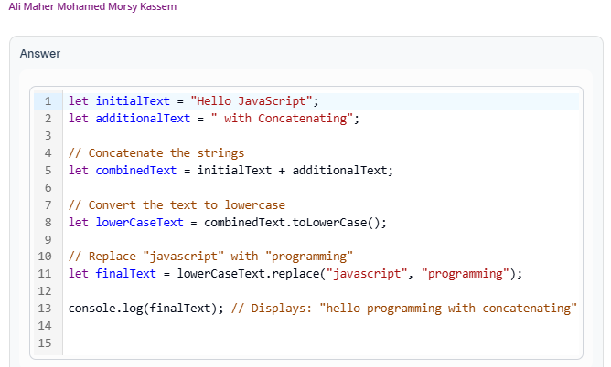
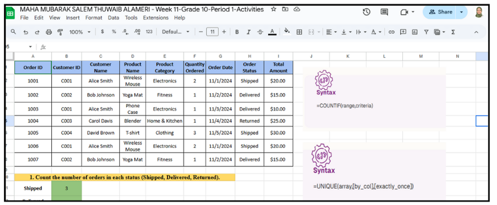

Examples of Exceptional Student Projects
Below are some examples of the outstanding work completed by my students. These projects showcase their creativity, critical thinking, and technical skills.
Grade 8 Project - Digital Webpage
Grade 8 students demonstrate their proficiency in HTML by designing a web page that creatively showcases a topic related to space exploration. The web page will feature a structured layout with appropriate headings, paragraphs, and multimedia elements to effectively communicate detailed information about the chosen topic.
Grade 8 Project - Using HTML Tables

Grade 8 students creating an HTML table that compares and contrasts two major cultural events in the UAE, namely Expo 2020 Dubai and the Al Dhafra Festival.
Grade 8 Project - Sustainability Webpage
Grade 8 students develop an HTML webpage that effectively communicates the theme of Sustainability within the Green Economy.
Grade 9 Project - "Book Review" form using HTML Forms
Grade 9 students demonstrate their ability to create an HTML form that collects user input through various form elements. They effectively utilize input fields, radio buttons, checkboxes, dropdown menus, and text areas to design a functional and user-friendly "Book Review" form.
Grade 9 Project - Strings in JavaScript
Grade 9 Students demonstrate the ability to manipulate strings in Python by using various string methods, including concatenation, case conversion, and word replacement, they apply their knowledge of string manipulation techniques to modify and transform text according to specific requirements.
Grade 9 Project - School Registration Form
Grade 9 Students design and create a functional school registration form using HTML to collect user input, apply CSS styling to enhance the visual appearance of the form, including layout, colors, fonts, and spacing, this project allow them to understand the importance of user interface (UI) design principles in creating user-friendly forms that are visually appealing and accessible.
Grade 10 Project - Create the Worm Wrangler Game’s Page 1
Grade 10 students design and structure an HTML web page that includes interactive form elements such as radio buttons, checkboxes, and sliders. They demonstrate the ability to create a user-friendly interface that allows for customization in a game setting.
Grade 10 Project - Database structure
Grade 10 Students analyze and extract insights from a database by performing queries to determine the count of orders based on specific statuses (Shipped, Delivered, and Returned), they will identify unique data entries (product categories) within a dataset, enhancing their understanding of data organization and categorization.